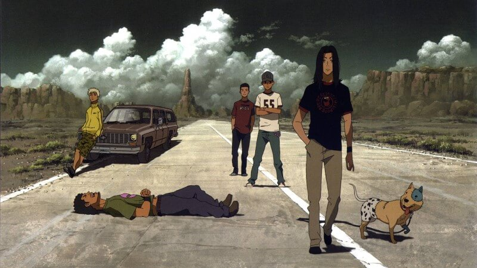

-Tiền Đàn Của Rừng Sâu là tác phẩm đầu tiên trong danh sách phim anime thể loại âm nhạc. Nội dung xoay quanh cuộc đời Kai Ichinose – cậu bé sống trong khu đèn đỏ, buổi đêm thường trốn vào rừng để chơi piano. Kai là người duy nhất có khả năng khiến cây đàn tưởng chừng đã hỏng phát ra âm thanh. Tại đây, cậu làm gặp gỡ được người bạn mới Shuhei Amamiya, con trai của một nghệ sĩ piano tài giỏi.
Phim Tiếng đàn của rừng sâu
-Shuhei nhận lời thách đố chơi cây đàn cũ kỹ, không rõ chủ nhân từ bạn bè. Đây chính là cơ duyên để Shuhei và Kai kết bạn với nhau. Ngưỡng mộ trước tài năng của Kai, cậu đã kể lại câu chuyện cho người thầy Sosuke Ajino, cựu nghệ sĩ piano hàng đầu. Kai kiên quyết từ chối tham gia học đàn, nhưng đã bị thuyết phục sau khi nghe Sosuke chơi bản Chopin mà cậu yêu thích nhất.
-Phim Hibike! Euphonium kể về một ban nhạc trẻ đã từng tham gia các giải đấu lớn của trường trung học Kitauji. Các thành viên trong nhóm đều có tài năng chơi nhạc cụ điêu luyện. Bỗng dưng, vị cố vấn của ban nhạc được thay đổi, khiến thành tích của họ bị tụt dốc, thậm chí vòng loại cũng không thể tham gia. Điều này đã khiến các thành viên nản chí, ngay cả người chơi kèn euphonium xuất sắc như Oumae Kumiko cũng có ý định sẽ rời khỏi nhóm.
Phim Hibike! Euphonium
-Trước tình hình đó, vị cố vấn mới đã giúp các học sinh tiến bộ hơn bằng sự nghiêm khắc cũng như kiến thức chuyên môn của mình. Niềm đam mê được đánh thức, họ chăm chỉ luyện tập, xây dựng đội nhóm đoàn kết. Kumiko có tiếp tục chơi kèn euphonium, ban nhạc sẽ phát triển ra sao? Hãy xem hết bộ phim anime hay về âm nhạc này để có lời giải đáp nhé!
-Nhắc đến phim hoạt hình âm nhạc thì không thể bỏ qua Tiếng Hát Vang Dội Bầu Trời. Bộ phim hoạt hình Nhật Bản này kể về cô gái đam mê ca hát mãnh liệt tên là Nino Arisugawa. Hằng này, cô thường đứng trên bờ biển, đem tiếng hát của mình hòa vang không gian. Thuở ấu thơ, Nino phải trải qua hai cuộc chia tay đau lòng. Một là mối tình đầu ngây ngô với Momo Sakaki, hai là Yuzu – cậu bé sáng tác nhạc đại tài.
Phim Anonymous noise
-Vì một lý do nào đó mà Momo và Yuzu đều rời đi, hứa chỉ cần Nino tiếp tục hát thì họ sẽ tìm được cô. Trải qua nhiều năm, số phận an bài cho cả ba học chung một trường. Dù cuộc sống có nhiều thay đổi theo dòng thời gian, nhưng Nino vẫn cố gắng thực hiện hẹn ước năm nào. Trong khi Yuzu vui mừng vì gặp lại Nino thì Momo lại tìm mọi cách tránh mặt. Phải chăng âm nhạc sẽ hàn gắn được tình bạn đó? Chuyện tình tay ba sẽ có kết thúc ra sao?
-Tháng Tư Là Lời Nói Dối Của Em là một trong những bộ phim anime âm nhạc kinh điển nhất mọi thời đại. Nội phim kể về Arima Kōsei – thần đồng âm nhạc sở hữu nhiều giải thưởng danh giá. Sau sự ra đi của mẹ, cậu gặp tình trạng không thể nghe được tiếng đàn của chính mình, dù thính giác không có vấn đề. Arima buộc phải dừng sự nghiệp trong vòng hai năm, cho tới khi một cô gái xuất hiện làm thay đổi mọi thứ.
Phim Tháng tư là lời nói dối của em
-Miyazono Kaori – nữ nhạc công violin chuyên nghiệp, luôn mang trong mình năng lực tích cực và tràn đầy sức sống. Cô đã thắp sáng khoảng thời gian tăm tối của Arima, giúp cậu lấy lại cảm hứng âm nhạc. Họ nhanh chóng trở nên thân thiết, cùng nhau hòa tấu các bản nhạc du dương. Kaori bất ngờ ra đi đột ngột, để lại cho Arima muôn vàn đau khổ và những tiếc nuối trong lòng khán giả về một mối tình học trò đẹp và dang dở.
-Cô Nàng Fuuka là một trong những bộ phim anime thể loại âm nhạc được chuyển thể từ truyện manga cùng tên của tác giả Kōji Seo. Sau khi phát sóng, bộ phim đã nhận được những phản hồi tích cực từ đông đảo người xem. Haruna Yuu – cậu học sinh 15 tuổi sống cô độc, chuyển nơi ở đến Tokyo sau khi người bố ra ngoài nước công tác. Một lần đi trên đường, Yuu vô tình đâm trúng Akitsuki Fuuka do mải xem điện thoại. Cô nàng tưởng cậu có ý đồ xấu nên đã đập nát điện thoại và cho Yuu một cái bạt tai.
Phim Fuuka
-Nào ngờ, Fuuka và cậu học cùng trường, Yuu trả lại đĩa CD mà cô làm rơi hôm trước. Cả hai nhanh chóng thân thiết khi biết có cùng đam mê âm nhạc. Yuu, Fuuka cùng 3 người bạn khác thành lập một ban nhạc, quyết tâm theo đuổi giấc mơ. Sau một thời gian bên nhau, họ dần nảy sinh tình cảm. Mối tình lãng mạn ngọt ngào đan xen hài hước bắt đầu từ đây.
-K-On! là cái tên tiếp theo trong danh sách những phim hoạt hình âm nhạc đáng xem nhất qua các năm. Tác phẩm anime ca nhạc này có nội dung xoay quanh bốn nữ sinh Hirasawa Yui, Kotobuki Tsumugi, Tainaka và Akiyama Mio. Họ cùng tham gia vào câu lạc bộ nhạc nhẹ của trường để ngăn quyết định đóng cửa từ ban lãnh đạo. Mỗi cô gái lựa chọn cho mình loại nhạc cụ phù hợp và chăm chỉ luyện tập.
Phim K-On!
-Dưới sự dẫn dắt bởi giáo viên dạy nhạc Yamanaka Sawako, cùng những nỗ lực không mệt mỏi, câu lạc bộ ngày càng phát triển hơn. Bước sang năm học thứ 2, ban nhạc kết nạp thành viên mới là Nakano Azusa. Tất cả theo đuổi đam mê một cách nghiêm túc, cố gắng đạt mục tiêu và lan tỏa tình yêu âm nhạc đến mọi người.
-Khúc Nhạc Nodame là gợi ý tuyệt vời cho những ai đang băn khoăn lựa chọn anime thể loại âm nhạc có nội dung hấp dẫn. Bộ phim kể về mối tình ngọt ngào, hài hước giữ Shinichi Chiaki và Megumi Nida. Chiaki – chàng sinh viên năm 3 với khả năng chơi piano và violin điêu luyện. Anh ước mơ trở thành nhạc trưởng tài ba, giống như thần tượng số một của mình Sebastiano Viera. Trái ngược với một Chiaki cầu toàn là cô nàng Megumi có lối sống không được nề nếp, khoa học cho lắm.
Phim Khúc nhạc Nodame
-Tên thường gọi của cô là Nodame, một thiên tài piano hiếm có và vô tình trở thành hàng xóm sát vách với Chiaki. Từ hai người xa lạ, họ gặp gỡ và bị đối phương thu hút rồi trở nên thân thiết. Khiếm khuyết của người này vừa hay là ưu điểm của người kia. Chiaki và Nodame dường như là mảnh ghép hoàn hảo thuộc về nhau. Mối quan hệ của họ ngày càng tiến xa hơn, cùng nhau trưởng thành và vượt qua khó khăn. Chiaki giúp Nodame thoát khỏi nỗi ám ảnh tâm lý, để tự tin theo đuổi đam mê piano. Đừng bỏ lỡ bộ anime này để xem ước mơ của họ có thành hiện thực không nhé!
-BECK là một trong những bộ phim anime âm nhạc hay và kinh điển nhất, thu hút đông đảo khán giả theo dõi. Nội dung xoay quanh cậu bé 14 tuổi Tanaka Yukio, một lần tình cờ cứu được con chó tên là Beck. Chủ nhân của chú chó này là nam nhạc sĩ rock trẻ tuổi Ryusuke Minami. Đây cũng chính là cơ duyên giúp Yukio nảy sinh tình yêu với âm nhạc, bắt đầu chơi guitar.

Phim BECK: Biệt đội Chop Mông Cổ
-Sau một thời gian tiếp xúc với Ryusuke, Yukio được thưởng thức những bản nhạc có âm hưởng sôi động tuyệt vời, khiến anh ngày càng yêu thích rock. Từ đây, ban nhạc BECK chính thức ra đời với sự tham gia của Yukio cùng những người bạn. Bộ phim anime này sở hữu cốt truyện hấp dẫn, tình tiết chặt chẽ, nhân vật đẹp, khiến khán giả không thể rời mắt.
-Giai Điệu Trên Triền Dốc là một trong những bộ phim anime hay về âm nhạc hứa hẹn sẽ không làm bạn thất vọng khi xem. Câu chuyện trong phim kể về Kaoru Nishimi, cậu học sinh thông minh, xuất thân từ gia đình giàu có. Do tính chất công việc của người cha nên Kaoru thường xuyên phải chuyển trường. Vì vậy, Kaoru không có nhiều bạn bè thân thiết, tính cách hướng nội khiến cậu khó hòa đồng trong môi trường mới.
Phim Giai điệu trên triền dốc
-Chuỗi ngày tẻ nhạt đó chấm dứt khi Kaoru gặp gỡ Sentarō Kawabuchi, một bad boy chính hiệu. Họ làm quen, trò chuyện với nhau rồi trở nên thân thiết. Sentarō đam mê mãnh liệt với thể loại nhạc jazz và đã truyền cảm hứng cho người bạn mới. Cửa hàng băng đĩa nhà Ritsuko Mukae là nơi mà cả hai thường chơi các bản nhạc jazz trầm bổng. Từ đây, cuộc sống Kaoru trở nên thú vị hơn, cậu đã tìm được niềm vui và sự hạnh phúc của tuổi trẻ.
-Tari Tari là một bộ phim anime hay về âm nhạc có nội dung xoay quanh năm học sinh trung học. Wakana – cô nàng hát rất hay, học nhạc từ nhỏ nhưng đã từ bỏ đam mê sau khi mẹ qua đời. Konatsu – một thiếu nữ yêu đời, thích ca hát nhảy múa, bị ám ảnh tâm lý vì phạm sai lầm trong buổi biểu diễn. Sawa – thành viên câu lạc bộ bắn cung, khao khát trở thành kỳ tài trên lưng ngựa. Taichi – nam thanh niên nghiêm túc, ước mơ được làm vận động viên cầu lông chuyên nghiệp. Atsuhiro – du học sinh chuyển về từ Áo, đang bỡ ngỡ với phong tục của quê hương.
Phim Tari Tari
-Mỗi người một tính cách, và hoàn cảnh sống riêng, nhưng họ đều có chung sở thích âm nhạc. Konatsu đã nỗ lực vượt qua nỗi ám ảnh khi xưa, tự thành lập câu lạc bộ để cháy hết mình với đam mê. Cô mời những người bạn còn lại cùng tham gia, cả 4 vui vẻ nhận lời và chăm chỉ luyện tập. Đừng bỏ qua bộ phim này để theo dõi hành trình chinh phục ước mơ của họ nhé!